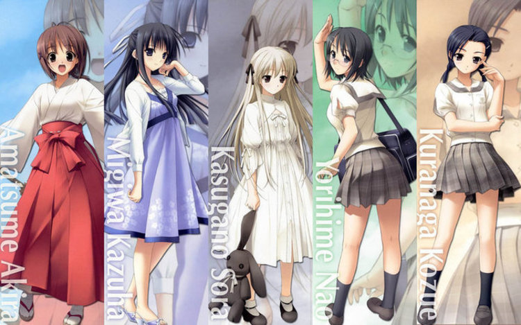

一个通宵，《缘之空》一周目总算是完成了，最大的感触就是《缘之空》真有点不像个正统的galgame，只有一开篇的三四个选项，之后就是剧情了，要说互动性的确不是很高（表拍我……><）。

按照以往通avg的习惯，一周目的所有选项点都用了sl大发，之后就按照自己内心真正的想法来用过一周目（就是这个习惯让我在《壳之少女》里面hll地便当了……），之后才可能按照攻略来看其它路线的剧情，而本作开头的三大选项自然也是按照内心真实想法来选择，最终走到了她这条路线
她有着阳光般的活泼与月光般的温柔，村子里面的人们都对她关爱有加，无论是来捉蝉的小孩子，还是令其它女生很头疼的“大孩子”亮平，在她的眼里都是很珍惜的朋友，她的表情常常是微笑、大笑、忍俊不禁，但也选择了为保护打架的笑脸而独自承受上一代留下的罪孽。
说到这里大家应该已经知道我说的是谁了吧。天女目瑛（Akira），正像这个名字一样，在大家心目中闪闪发光（kirakira）的这个女孩，也许有人会说我是因为对瑛的遭遇产生的同情心掩盖了其它感觉，也许我会辩解我会被她吸引是因为她的热烈与温柔。但就游戏本身而言，我用自己真实的心意走上的道路，不是通向姐姐一样照顾大家的奈绪，也不是性格个性和我很相近的一叶，更不是穹妹这一禁忌的象征，而是与自己地位平起平坐的瑛，这不能不说是一种缘分吧。
其实在三次元的世界里面，我也是更偏向于喜欢阳光朝气的女孩子，而对那些文静的女生并不看好（这是真的，我暗恋六年的对象就是那种看上去很精神的女生！），也许就是因为这一点吧，内心深处的这一倾向让我最终选择了能把坚冰融化的瑛，无论是和孩子们打土制棒球的时候，还是在海边乱疯一气的时候，还是在村子里面和她一起当“志愿者”二人组的时候，她的耀眼在我的脑海里面总能留下深深的刻印。也许，感觉和阳光的，无邪气的她呆在一起时的自己最能接近自己的本性吧，这种不用戴面具就能与人安心交往的感觉，大家应该都不会讨厌吧，呆呆的瑛，欢笑的瑛，热情的瑛，温柔的瑛……
但是，这一切难道都是她为了隐藏自己真是面目的铠甲？
随着两人关系日益地密切，瑛不为人知的另一个世界也逐渐想我打开大门，她与一叶，与整个渚家族的关系，甚至是纠纷，在我面前平铺展开。原来瑛也曾经是一个被抛弃的孩子，被渚家抛弃，被这个亲戚抛弃，被那个亲戚抛弃，在所谓的亲人之间就像皮球一样被踢来踢去。“要知道他们就在头顶上争吵着关乎她命运的话题，但那孩子她居然还在笑着，我当时只以为她是太小不懂事，不过我想她应该是知道了自己在这件事情中根本用不上什么力吧。”听了八寻这番话，我想很多人都会对那些抛弃瑛的家伙恨得牙根痒痒，我是真恨不能冲到瑛和他们之间，对他们，也同样是对瑛，大声地吼一句：“够了！这样子太过分了！”可是真正训斥之后，我还能做些什么呢，他们照样把瑛当做皮球，当做垃圾；瑛还是会“戴着”她的微笑。我还能做些什么，也许感到自己的无能之后，还会要麻烦瑛反过来安慰我……
不过幸好，瑛有天女目爷爷来照顾，不至于沦落到呆在孤儿院甚至流落街头，幸好，有爷爷来爱她……不过就算是这一点点微弱的幸福，也会有人想要把它弄熄。当天女目爷爷的儿子儿媳说出那番话的时候，我难以控制地握紧了拳头，甚至握住了手中的刀。当两人最终离开神社，我用了最恶毒的诅咒来欢送他们。瑛这次终于支撑不住了，再也穿不起那副铠甲了吗？“如果我消失了，大家都会高兴吧？”别犯傻了！如果当初在场的是不善表达的我，我肯定会哭着喊出一句：“如果你要是真的敢逃走，我就杀了你！绝对！”可是如果她真的离开了，就算是追到利比亚我也要把她找回来。
过去的伤痛，似乎就此为止了，等到了瑛说出“我喜欢你”那一刻，我真的心里一震，“也许这样一来她心里面的伤口就会愈合了吧？”我天真地设想出最好的结果，不过……
“两个孩子都弄掉了写着姓名的手环”我感到头皮发麻，胸口像是有块大石压着出不来气，又读了一遍春日野奶奶留下的日志，“那孩子一反刚刚出生时的安静，开始活泼起来，甚至扯断了妈妈——渚小姐的项链。”就像是有一阵电流，从头顶一直流到脚心，又好像是刚刚跑完五公里之后有一盆冰水从头上泼下来，我有点不敢往下继续下面的剧情，当带着那刺痛的视线突然出现的时候，我又一次体会到“大脑空白”是一种怎样的概念，“胡乱编的谎话，不会相信的吧，她应该也知道我看到了什么”之后虽然也在和她在一起，但是心思完全已经乱到不行，这次和她的分开，感觉好像没有什么留恋，甚至有一种从虎口逃命出来的感觉。如果瑛和一叶真的是被掉包的两姐妹，如果两人真正的归宿应该是天女目一叶和渚瑛，如果两人中其中一人的母亲真的有那么的狠毒，居然想到用自己的亲生骨肉来下最后一步两败俱伤的棋……如果……这些假设在心头挥之不去，无时无刻不在思考接下来该怎么办，可是最终发现现在的我根本思考不下去，完全地沉浸在了对那些“如果”的恐惧之中。“如果你是因为同情才接近瑛的，我劝你还是收手吧，因为这个理由也是那孩子不希望看到的。”不是！我是因为迷恋上了瑛这个人本身，这个没有收到污染的灵魂！“你要是能有即使把瑛弄哭或者被她讨厌也在所不惜的觉悟的话，那就去干吧”可是，这件事情弄清真相真的好吗，也许以后时间长了，瑛的心中就会把这件事淡化掉，而且这样一来，大家现在的幸福生活也不会被打破，但是现在看瑛和一叶真的幸福吗，虽然是亲生姐妹，但互称姐妹都得背着家长的面，这样的两人，真的能算是幸福吗，幸福的定义究竟又是什么？“那孩子打算自己一人背负上一代留下的罪孽，自己把它带进坟墓。”别开玩笑了，那样弱小的身躯怎么能背负那种阴谋，这种念头本身就是犯罪！可如果真正把事实找出来了，如果真的像我和春日野奶奶担心的那样，对瑛又会是另一个更深重的打击，而且会牵连到身边的大家，一叶他们也会受到不小的冲击，无论是我还是瑛自己，都不会让这件事情发生的吧……
这里，我和主角的想法开始发生了分歧，也就不方便用第一人称来叙述春日野悠的视角了。
对于是否要弄清真相这一选择，我最后选择了不去挖开这陈年旧事，如果瑛能够淡忘了最好，她不能忘却就让身边的人填充她心灵的伤口，可是悠没有这样做，他最后思考的结果却是坚决要把这件事情查个水落石出，就算最终的结果是他“把目的都弄丢了的赌博式的乱搞一气。”，也不希望看到瑛伤心的微笑了。可是如果真的能让瑛不再维持那种伤心的微笑，这样做真的可行吗，接下来的发展又会是怎样呢？
于是悠和八寻就从网上进行了亲子鉴定的申请，之后也就出现了八寻的棉签play（喂！）这时候是我和主角的第二次想法的分歧，如果我是悠，我会讲一叶与瑛的样本调换，最终让一叶和渚夫人的结果成为最终结果，这样一来，如果是鉴定结果是母女，那我就可以说成是当初不小心把一叶和瑛的样本弄混了，这样两个样本是母女关系，就说明一叶和渚夫人的确是母女，万事大吉，也就没人追究了；如果鉴定结果不是母女，那自然是不明真相的众人欢喜，而我把整件事情的压力全都拿到了自己身上，这样我就成了需要伪装真相的人，我要把整件事情带进坟墓，这样能把事件造成的损失降到最小。但是悠本人并没有这样耍小聪明，而是讲样本完好地寄送出去，当悠和一叶两个人把邮件投递出去之后，我顿时感觉就好像头顶上有一把用发丝悬住的利剑，而检验结果就是将要落在利剑上面的一只大型甲虫，那时候简直就是到了听天由命的程度，两个人如果真的把事情做到这一步，既然没有了回头路，那剩下就仅有硬着头皮往上冲了。
“也许我消失了，大家才会真正快乐吧”不知道为什么，脑子里面突然出现了这句话。
别开玩笑了！谁要是胆敢让你在这里消失，我就第一个让他下地狱！我向叉依姬大人发誓！
等到了结果出来那天，心里根本不可能静下来，无论老师在讲台上说的是什么，我都好像没有那个脑子去理解了等到了放学的时候，已经心乱如麻的我听说穹妹和瑛已经先我一步离开学校，头脑里就像有颗炸弹引爆了一样，气息紊乱地逃回家，穹不在，挂号信却被穹先一步收走。赶到神社，闻到了烧东西的味道，我顿时明白两人为什么要这样行动，这里就出现了和悠的第三次思想分歧，我觉得，如果两人真的就这样把挂号信烧掉，结果本身也就没什么意义了，这件事情就按照我们预想的最好情况进行下去，鉴定什么的真相什么的，就当作一场闹剧吧。但是当我看到瑛那寂寞的笑容，我瞬间明白自己还是想错了，于是又和悠的思想达成了一致：把结果从火里面抢出来！
抢出来了，之后要怎么办呢，如果整件事真的是上一代的阴谋，那怎样才能在让瑛明白真相的同时不伤害到一叶呢……总是想着不要给别人添麻烦，但是自己这样任性做出来的事情肯定是会让他人（一叶）有相当大的困扰的，该怎么办，该怎么办……
“瑛，你平时都在照顾我们，为我们分担苦恼，这次轮到我们，你的朋友们来支持你了哦。”一叶的这句话，让我彻底清醒了，原来这件事情牵扯的其他的人，并不是只有“别人”这一个身份，还有“朋友”这个美名呢啊，平时常常在照顾他人的瑛，终于也应该相信朋友，相信这件事情如果变成最坏的结果，带给朋友的也不会是无尽的伤痛，因为人与人，就是应该互相支持互相扶持不是吗，就像在冬日里靠在一起取暖的小田鼠一样，在带给朋友温暖的同时，朋友那来自心灵的温暖我们自己不是也感受得到吗。瑛，不要一个人总是要承担一切，看，我们大家，不都在帮着你分担那一份压力吗，如果你能摘下那伪装的面具，露出真正的笑容，那才是大家希望看到的，我保证！
最终的结果，一叶与渚夫人99.9%排除非亲生……排除非亲生……排除……非……亲生，那就是说渚夫人和一叶的确是母女关系啦，“md，还‘排除非亲生’，搞什么吗！绕什么弯子，讨厌！”虽然嘴上在骂检验结果的语言拗口，但是我也高兴地差点哭了出来，你看，人类这种生物，果然还是善良的，当初瑛的母亲就算到了那种情形，也没有坏到要用自己的亲生女儿来冒险，真的感觉，全身都没力气了，虚脱了一样，“这样，就是新的开始了吧？”我无力地，高兴地笑着，看着最终卸下负担的瑛的真正笑脸，笑着……
不过，为瑛准备的新开始的礼物还不止于此，最终瑛在与渚夫人谈话离开被叫住的时候，我的心又紧了起来，当渚夫人把项链重新挂到瑛的脖子上，承认瑛和一叶是姐妹的时候，一直在强忍住的我，终于哭了出来，瑛，你有你被承认了哦，不再是被抛弃的孩子了哦，眼前已经模糊不清，看不清接下来的剧情了，不过瑛与悠的未来，现在才刚刚开始……